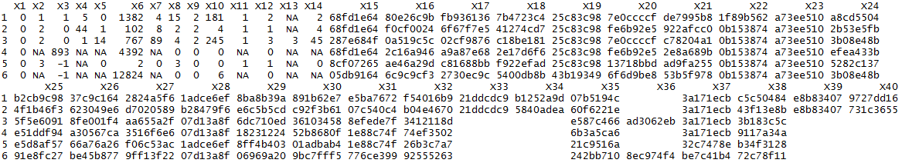

Criteo CTR prediction
Kevin Payet
29 octobre 2015
This page describes my work on the Criteo challenge hosted on Kaggle more than a year ago. This is an interesting data set, that can be tricky to deal with because of the memory footprint; which is the first reason why I decided to work on it. The following explain how I approached this problem.
The goal of this challenge was to produce a ML model for predicting Click-Through-Rate (CTR), using a bunch of features provided by Criteo. For more details on the challenge, see the Kaggle page. Even though the challenge closed more than a year ago, Criteo keeps the data available here. Note that criteo released a new dataset for CTR prediction, the Terabyte Click Logs, that is similar to the previous one, only far bigger (over 4 billion lines, and over 1TB). In the near future, I might update this page with the new data.
The data page allows one to download the full data set, or the sample one. The sample archive (dac_sample.tar.gz) contains the "dac_sample.txt" file, with 100K observations. The full dataset contains the "train.txt" and "test.txt" files (~11GB and 1.4GB respectively when uncompressed). The train file contains 45M+ observations, with 39 features + 1 label. The test file contains only the features, and the evaluation of ones predictions are meant to be computed by the Kaggle system.
Before the full training, I started exploring the dataset with R, to decide how it should be processed ...
Data exploration in R
The scripts that go with the explanation given here can be found in the github repository linked above: criteo.R and criteo_helper.R.
For this part, we can simply start working with the sample, to get the training procedure working, before moving to the full dataset.
require(readr)
train = read_delim("dac_sample.txt", delim="\t", col_names = F)
head(train)

We see above what the data looks like. The first column is the label for the given observation, with 0 for not-clicked and 1 for clicked. The data has 13 integer features, and 26 categorical features, that have been hashed onto 32 bits for anonymization purposes. An empty field means that the corresponding value is missing.
The first thing to do is to shuffle the train set, to lose any time ordering that may be present in the dataset. If you want to split the data into train and validation set, this is also the point here you should do it (see R script).
The features then needs to be processed for training. There are a lot of procedures to so, but here I use a quite simple/standard one:
Integer features:
Features 2 to 14 are scaled using preProces function from caret package. The scaling found is then applied to the train, validation and test sets. It is very important to scale the validation and test sets with the same values computed from the train set, otherwise you get something biased. I then simply replace NA (missing) values with the flag -666. I did this because I was thinking of using xgboost, that is designed to deal automatically with missing values, with the missing flag (here, missing = -666).
Categorical features:
These features are what made this competition the most challenging. The problem is that in order to train a model, we need to encode the categorical features, and the usual way to do it is to use one-hot encoding, where each categorical feature is turned into a number of binary variables (e.g. a feature with 10 levels is encoded as 9 binary variables, where only one of these new features is equal to 1 at a time, the others being 0). The problem with this approach is that combined, the 26 features have more than 250K features, which is pretty big, and makes would result in a ~ 40 TB matrix... But since the matrix is mostly, the problem with the size of the matrix can be alleviated by the use of a sparse matrix format (where only non-zero entries are stored). However, the computation of such matrix can still be quite challenging in terms of memory.
The second aspect to deal with is that in the test set, we quickly see that there are levels that did not appear in the train set. So, one should also decide of a way to deal with it. In my case, what I did is simply:
Record all observed levels, for each features, in the train set
All features levels in the test set that were not also in the train set, are reencoded as "" (empty string), i.e. as a missing value. One other way to do it is to replace these values with the mode (level that appears the most) of each feature. But, it doesn't improve performance, and can even introduce an annoying bias.
To encode the categorical feature, we can use the sparse.model.matrix function from the Matrix package. It does a good job for the sample, however, for the full train set, the amount of memory to perform such operation in R is extremely high. I decided to do it anyway, out of curiosity, and it could be achieved only by using a r3.4xlarge machine on AWS, i.e. 122 GB of RAM.
Another method for encoding these variables, is to use the Feature Hashing (aka the hashing trick). According to wikipedia, it is "is a fast and space-efficient way of vectorizing features, i.e. turning arbitrary features into indices in a vector or matrix. It works by applying a hash function to the features and using their hash values as indices directly, rather than looking the indices up in an associative array." This method allows to featurize our data more quickly, and by using a smaller amount of memory. It is implemented into the hashed.model.matrix from the FeatureHashing package.
trainHashFeats = hashed.model.matrix(~ .-1, data = train[,2:40], hash.size = 2^16, transpose = F)
In R, this command results in a sparse matrix of 19.6GB in memory.
Training with xgboost
From there, it is pretty easy to train the model fo our choice, with the restriction that it should be able to work on sparse matrix format. This is the case for the xgboost package.
Training can be achieved simply with the command below. The values for the hyperparameters were computed using grid search (see grid.Search function in criteo_helper.R) and cross-validation on the validation set.
xgbParams = list(max.depth=12, eta=0.1, gamma = 7.5, min_child_weight = 5, missing = -666,
max_delta_step = 1, subsample = 1, colsample_bytree = 1, silent=1)
xgModel = xgb.train(params = xgbParams, data = dtrain, watchlist = list(train=dtrain, valid=dvalid),
nrounds = 1, objective = "binary:logistic", eval_metric="logloss", verbose = 1)
The way the training is done in the script (training for 1 round, then 50 more and saving, then 50 more, and so on.) is simply because I trained on AWs, using spot instances, that can be shutdown at any time. So, in case that happened, I didn't want to lose everything I did.
The training with R was mainly for fun, to see what working or not. However, when we have to deal with such a dataset that can be tricky if one doesn't have 100 GB of RAM, it's the use of Hadoop that comes to mind. In the following, I will present pretty much the same than what I did here, but using Spark this time.
Logistic regression with Spark
Hadoop/Spark make it easier to process the data for training. Spark has also the benefit to have a shipped-in machine learning library (MLlib).
I used the python interface to Spark, pySpark, on AWS again. The python scripts used can be found on the github repository again: criteoSpark.py and helperFunctions.py. The latter defines the different function I used for training.
The part of the script from lines 30 to 71 was used to process the data and train a logistic regression model using one-hot encoding. It works perfectly fine with the sample fine, however, it can be challenging to use with the full data set as it requires a lot of memory for the processing, exactly like it was in R.
Instead, I now process using feature hashing, and train a logistic regression model again. Here's is how the script works:
# Load data
rawData = (sc.textFile("./train.txt", 256) # change value here for number of partitions
.map(lambda x: x.replace('\t', ',')))
weights = [.97, .03]
seed = 1234
rawTrainData, rawValidationData = rawData.randomSplit(weights, seed)
# Cache the data for performance
rawTrainData.cache()
rawValidationData.cache()
# Make sure that label is simply Id for the test set, i.e. the line of the observation + 59999999
rawTestSet = (sc.textFile("test.txt", 10) # change value here for number of partitions
.map(lambda x: x.replace('\t', ','))
.zipWithIndex()
.map(lambda t: str( t[1] + 60000000 ) + "," + t[0] ))
After creating the SparkContext, I load the training data in RDD, and split it between a train set and holdout validation set that I use to perform a quick grid search for logitic regression parameters. For the test set, I do the same, with the extra step of adding a fake label at the beginning of each observation. This step is only required for creating the submission file that complies with the format required for Kaggle submission.
The features are then vectorized using createHashedPoint function that is defined inside the helperFunctions script, together with all functions required.
hashedTrainData = rawTrainData.map(lambda point: createHashedPoint(point, 2**15))
hashedTrainData.cache()
hashedValidationData = rawValidationData.map(lambda point: createHashedPoint(point, 2**15))
hashedValidationData.cache()
I then perform a simple grid search, for the step size and regularization parameter required by the LogisticRegressionWithSGD function from MLlib. In this loop, I decided to fix the number of iterations to 500. It could be also included in the grid search, but my goal here is mainly to obtain a training routine that works, instead of obtaining the best possible result, which would require much more computation, hence a much larger cost, since I'm working on AWS.
bestModel = None
bestLogLoss = float("inf")
stepSizes = [1, 5, 10, 20]
regParams = [0.000001, 0.0001, 0.001, 0.01]
from pyspark.mllib.classification import LogisticRegressionWithSGD
for stepSize in stepSizes:
for regParam in regParams:
model = LogisticRegressionWithSGD.train(hashedTrainData, 500, stepSize, regParam=regParam, regType='l2', intercept=True)
logLossVa = (hashedValidationData.map(lambda p: (p.label, getCTRProb(p.features, model.weights, model.intercept)))
.map(lambda p: computeLogLoss(p[1], p[0]))
.reduce(lambda a,b: a+b))/hashedValidationData.count()
# logLossVa = evaluateModel(model, hashedValidationData)
if (logLossVa < bestLogLoss):
bestModel = model
bestLogLoss = logLossVa
The best model is then used to compute the predictions on Kaggle's test set, and the result is then written to disk in the format required by Kaggle:
testHashed = rawTestSet.map(lambda point: createHashedPoint(point, 2**15))
testPredictions = (testHashed.map(lambda p: (p.label, getCTRProb(p.features, bestModel.weights, bestModel.intercept))) # in test label is simply observation Id, needed for Kaggle submission.
.map(lambda t: str(int(t[0])) + "," + str(t[1]))
.coalesce(1) # so that the prediction file is written in a single file
.saveAsTextFile("predictions.csv"))
I submitted the output created this way to Kaggle and got a score of ...